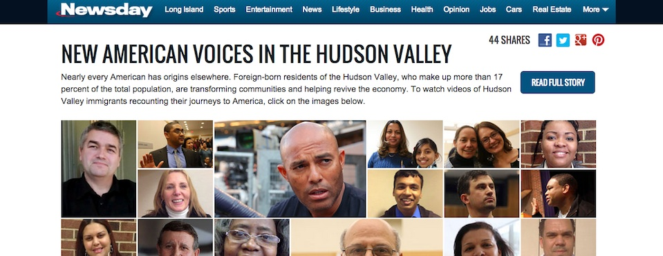

Featured Projects
Goin' Places allows users to create, share and clone travel plans with other users.
By: Katherine Santiago and Matt Lucas
Tools: Ruby on Rails, jQuery, Sass, Bourbon and Neat.

The NYC Farmers Markets map shows the locations of farmers' markets in the New York City area in 2013.
By: Jimmy Davis, Tom Metzger and Katherine Santiago
Tools: Ruby on Rails, jQuery, and D3.js, HTML, CSS
 Track Congress tracks federal representatives by state using two Sunlight Foundation APIs. It gives users an easy way to contact government officials through social media, find out which committees to which they belong, and their top 10 most frequently used words on the Congressional floor.
Track Congress tracks federal representatives by state using two Sunlight Foundation APIs. It gives users an easy way to contact government officials through social media, find out which committees to which they belong, and their top 10 most frequently used words on the Congressional floor.
By: Katherine Santiago
Tools: Ruby on Rails, HTML, CSS

New American Voices, published by Newsday, features video interviews of foreign-botrn residents of the Hudson Valley, who makeup more than 17% of the population of the area.
By: Matt Cassella and Katherine Santiago
Tools: jQuery, HTML, CSS
The New Hudson, published by Newsday, is an interactive map of development work along the Hudson Valley.
By: T.C. McCarthy and Katherine Santiago
Tools: Google Maps, jQuery, HTML, CSS
 Kerry Kennedy: Her father's daughter is a journalism project published by Newsday about RFK's 7th child.
Kerry Kennedy: Her father's daughter is a journalism project published by Newsday about RFK's 7th child.
Tools: HTML, CSS
 Because of Us was created using state representatives' data from the Sunlight Foundation and state gun control data during a hackathon in 2013.
Because of Us was created using state representatives' data from the Sunlight Foundation and state gun control data during a hackathon in 2013.
By: Marco Chang, Yvonne Leow, Margaret Kim, Katherine Santiago, and Dan Stratthaus
Tools: PHP, MySQL, HTML, CSS